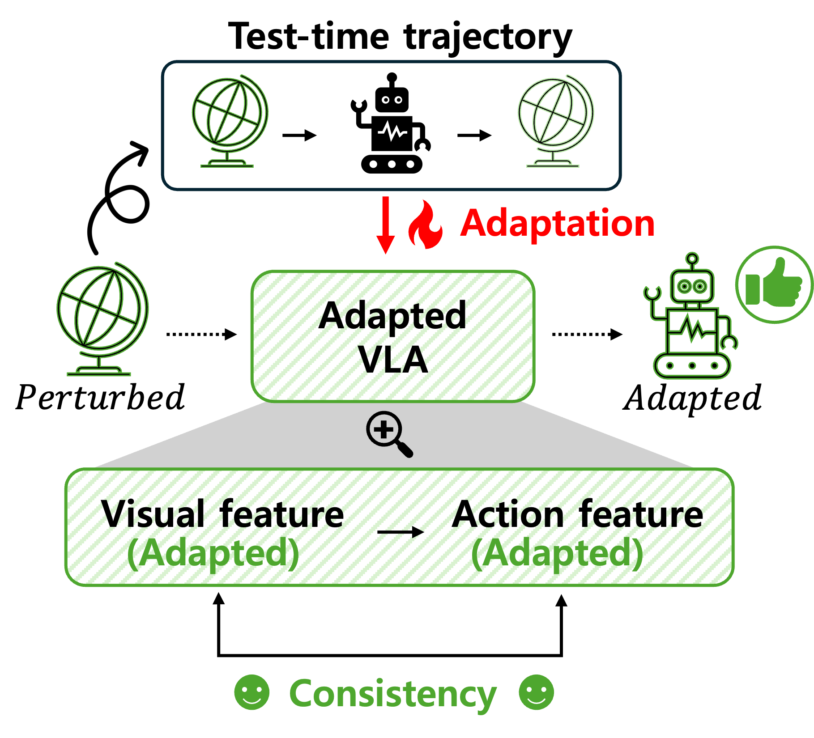
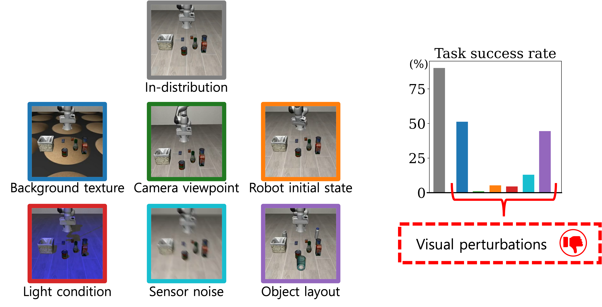
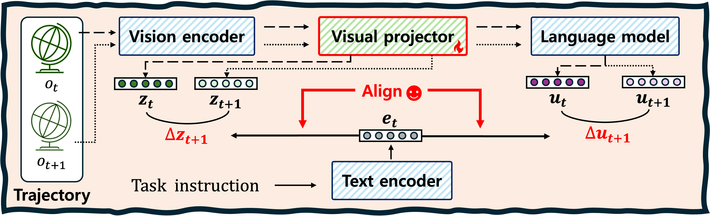

Can Vision-Language-Action Models Adapt to
Visual Perturbations Using a Test-Time Trajectory?
TTA-VLA introduces a test-time trajectory-based adaptation framework for vision-language-action models that restores visual–action alignment under unseen visual perturbations while preserving task semantics.

Abstract
Recently, vision–language–action models (VLAs) have shown strong generalization across diverse robotic tasks. However, when deployed in new environments with unseen visual conditions, their performance often degrades due to visual distribution shifts. Such shifts disrupt the alignment between visual and action representations, leading to distorted action semantics at test-time. Existing approaches primarily address this issue by scaling multi-modal training data or incorporating reasoning mechanisms. However, they require substantial data collection and computational resources, limiting their practicality for various real-world deployments.
To address this challenge, we propose TTA-VLA, a simple yet effective test-time adaptation framework for VLAs using only a test-time trajectory. Our method leverages environment-specific observations from this trajectory as self-supervision signals for adaptation. Based on these observations, we extract visual and action embedding transitions from a pre-trained VLA and align them to reduce visual–action temporal inconsistencies induced by unseen visual shifts. To preserve task semantics in the representations under visual distribution shifts, we introduce a language-conditioned reference that grounds visual–action transition features in the task instruction, providing an environment-invariant anchor.
Across various visual perturbation scenarios on benchmark and real-world experiments, our method achieves an average success rate improvement of 24% over the pre-trained policies.
Motivation

Vision-language-action models can generalize across diverse manipulation tasks, but their performance can significantly degrade when visual conditions at deployment differ from those seen during training. Changes in background texture, camera viewpoint, lighting, robot initial state, sensor noise, or object layout can disrupt the visual-action grounding required for reliable execution.
Framework
Adaptation using environment-specific observations available at test time (test-time trajectory).
Test-time trajectory
The robot collects observations from the shifted environment at test-time.
Self-supervised adaptation
The collected trajectory provides supervision for adapting the VLA without expert supervision.
Visual–action consistency
The adapted model restores the visual–action correspondence disrupted by visual perturbations.
Method
TTA-VLA: Test-time Trajectory-based Adaptation for Vision-Language-Action models
Alignment of visual and action transitions while using the task instruction to preserve semantic consistency.

Extract transitions
Compute visual and action feature changes from consecutive steps in the test-time trajectory.
Align visual–action changes
Reduce inconsistencies between visual transitions and action transitions caused by visual perturbations.
Anchor with language
Use the task instruction as a semantic reference to keep the adapted representation task-relevant.
Experiment videos
Benchmark
Real-world
BibTeX